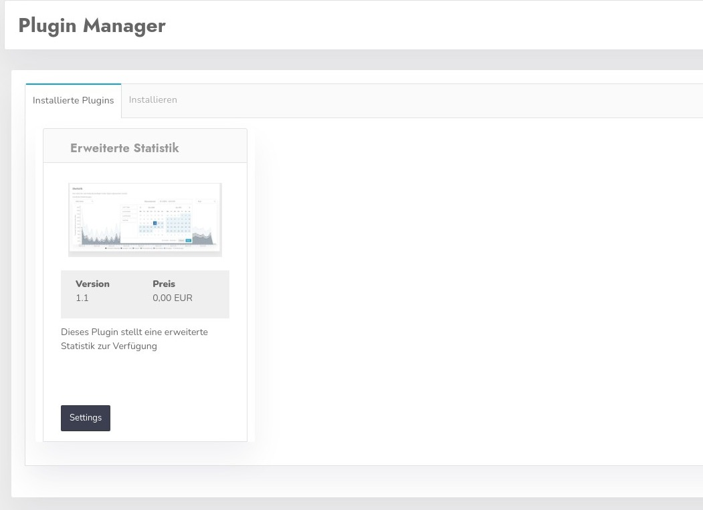
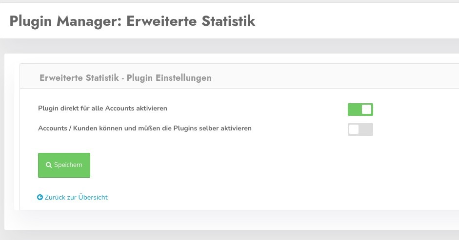

Plugins erweitern die Grundfunktionen des CCM19 Cookie Consent Manager um beliebige Funktionen.
Verfügbare Plugins finden Sie in der Administration unter dem Reiter "Plugin Manager", dort finden Sie eine Auflistung in 2 Reitern.
Hier finden Sie die Auflistung der installierten Plugins wie im Screenshot zu sehen.

Der Klick auf Settings öffnet folgende Maske

Sie können das Plugin direkt für alle Accounts aktivieren. In der Downloadversion ist der Haken immer gesetzt - da es nur einen Benutzer gibt.
Mit der Einstellung "Accounts / Kunden können und müßen die Plugins selber aktivieren" übergeben Sie die Verwantwortung für die Nutzung an Ihre Kunden. Diese Funktion ist in der OnPremise Version nicht aktiv - da es nur 1 Nutzer gibt.
Verfügbare Plugins finden Sie links im Menü.